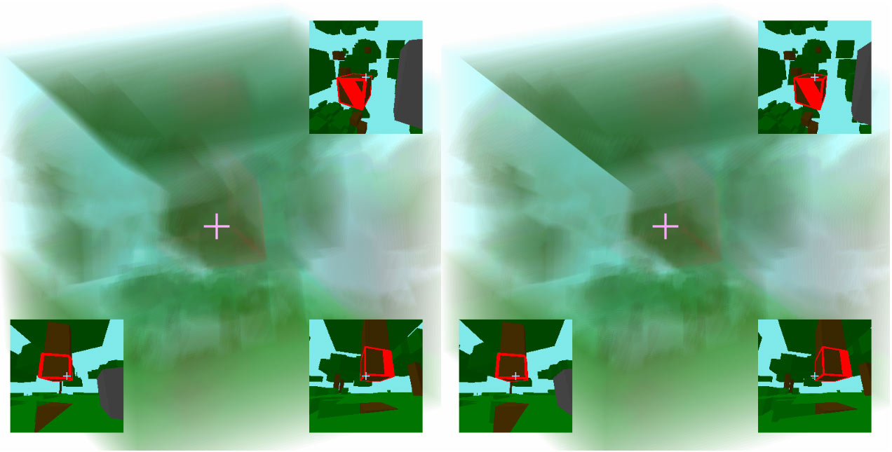
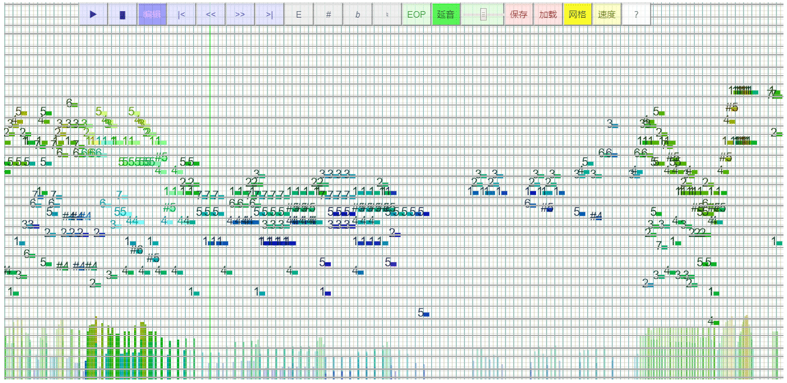

4D Viewer
[源码]

一个使用立体视野来显示四维空间的js库（类似Three.js），目标是尽让我们可能体会到四维人的三维视觉。附带一些Demo，比如超立方体、minecraft、关卡游戏等等。（将会缓慢更新）
Every One Piano 类似物
[源码]

一个键盘钢琴（模仿Every One Piano）小程序，我根据自己的习惯进行了改良，有各种变调、移调的方式，所以没有键位设置选项，适合即兴。可以导入导出MIDI文件，编辑音符,支持多音轨和少数MIDI控制器(7、64)，有对齐网格量化、力度调节、速度录制等功能。此外除了钢琴还可选其他几个音色。
博文中的JS小程序集合
- [原文] 计算四维星球上的太阳高度角
- [原文] 墨卡托投影
- [原文] 双曲镶嵌模型
- [原文] 维度数学漫步预告片中的格子空间
- [原文] Hopf纤维丛